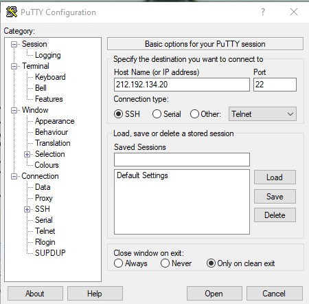
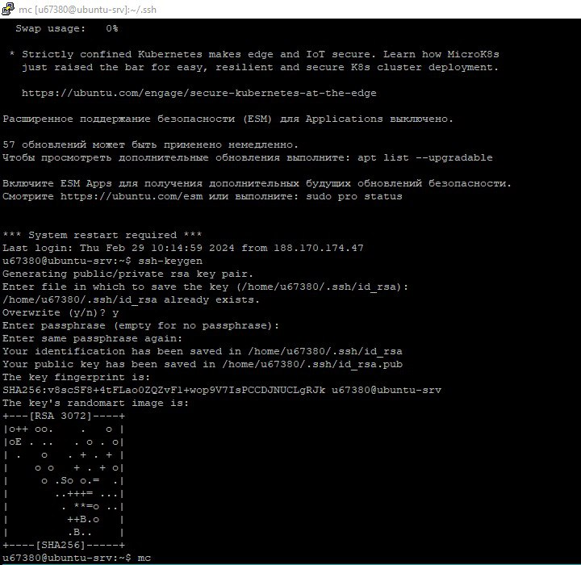
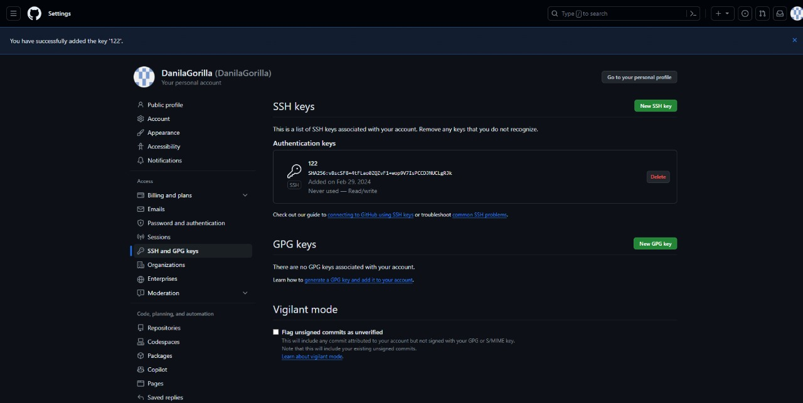
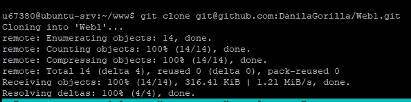
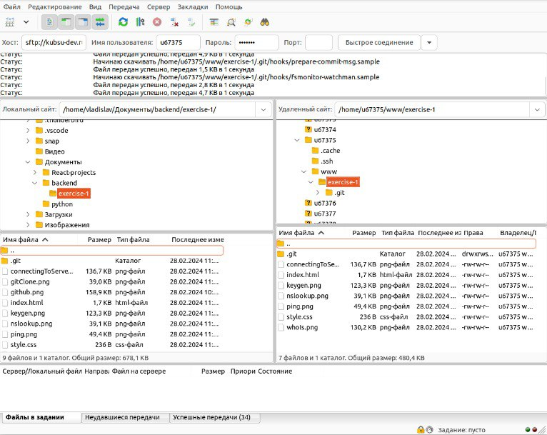
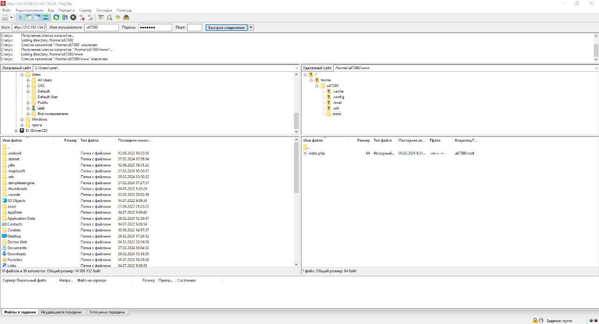

1. Подключение к серверу.
Получили через сообщения в Moolde логин и пароль доступа к учебному серверу
kubsu-dev.ru. Подключились к нему по SSH с помощью клиента
Putty.exe, команды ssh.

2. IP-адрес веб сервера
С помощью команды ping на учебном сервере узнали IP-адрес веб-сервера kubsu.ru.
Когда вы выполняете команду ping в программе PuTTY, вы вводите IP-адрес или доменное имя устройства или компьютера, к которому хотите проверить соединение.
Затем PuTTY отправляет ICMP-запросы на это устройство и ожидает ответа.
Результаты команды ping могут включать время ответа, процент потерянных пакетов, а также другую статистическую информацию, которая может быть полезна для диагностики проблем с сетевым соединением.

3. A-записи и MX-записи
С помощью команды nslookup узнали A-записи и MX-записи домена kubsu.ru и kubsu-dev.ru
A-записи (Address Record) - это записи DNS, которые связывают доменное имя с IP-адресом.
Они используются для определения того, какой IP-адрес должен быть ассоциирован с определенным доменом.
MX-записи (Mail Exchange Record) - это записи DNS, которые определяют почтовые сервера, ответственные за прием электронной почты для домена.
Они указывают, куда должно быть отправлено электронное письмо, адресованное домену.

4. Дата регистрации домена.
С помощью команды whois узнал дату регистрации домена kubsu.ru и kubsu- dev.ru
После выполнения команды whois в PuTTY вы получите информацию о домене,
включая регистратора домена, дату регистрации, дату истечения срока регистрации, контактную информацию и другие сведения, доступные через службу WHOIS.

5.Получение ssh-ключей
С помощью программы PUTTYGEN.EXE получаем ключи SSH.
Команда ssh-gen позволяет генерировать новые пары ключей, включая ключи RSA, DSA, ECDSA и Ed25519. После генерации ключей PuTTY
предоставляет приватный ключ, который необходимо сохранить в безопасном месте, а также публичный ключ, который можно использовать для аутентификации на удаленных серверах.

6. Добавление ssh-ключей
Добваляем ssh-ключ на github через личный кабинет/SSH and GPG keys/ new SSH key

7. Копируем файлы из репозитория на сервер
с помощью команды git clone скопировал репозиторий на сервер

8.Подлкючение через FileZilla
Подключился через FileZilla и скопировал файлы с сервера на свой компьютер

9. Удаление старой версии репозитория.
Удаляем старую версию репозиория из каталога www , для дальнейшей установки более свежей версии
10. Копируем файлы из репозитория на сервер
Еще раз копируем файлы из репозитория на сервер с помощью команды git clone скопировал репозиторий на сервер